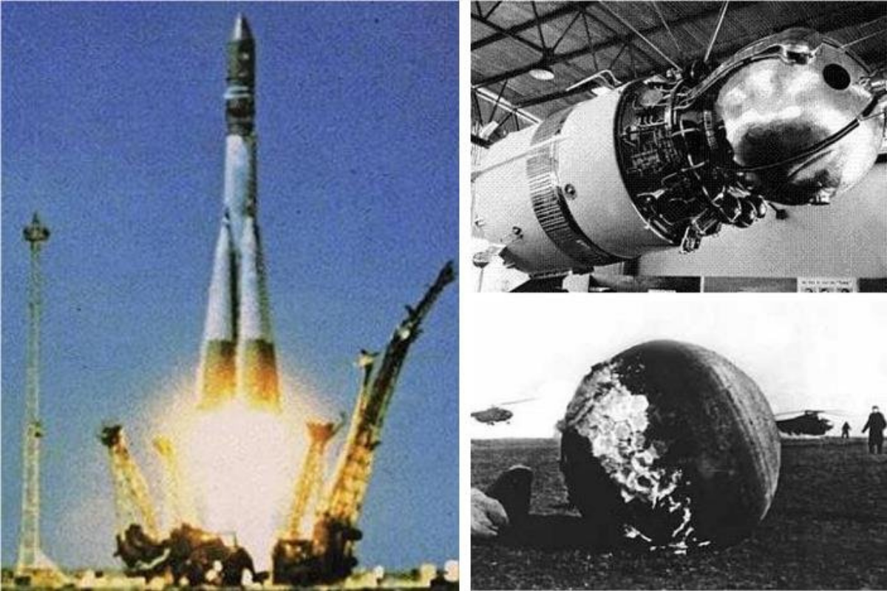

Witamy na stronie głównej!

Dowiesz się tutaj o początkach historii lotów kosmicznych, będziesz miał również możliwość spojrzeć na czasy współczesne.
Dowiesz się tutaj o początkach historii lotów kosmicznych, będziesz miał również możliwość spojrzeć na czasy współczesne.